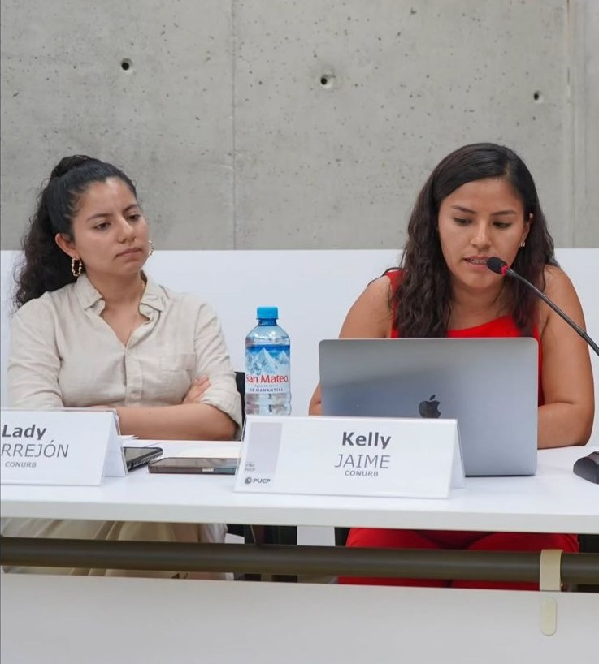
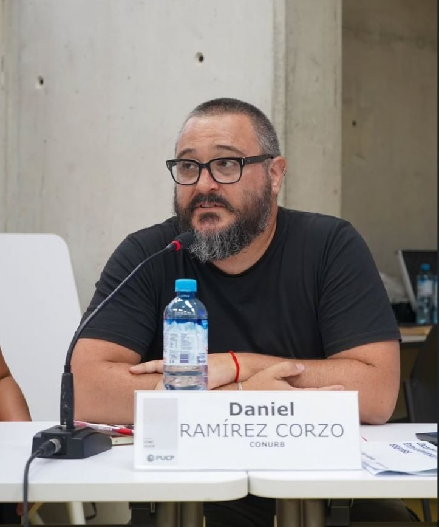

El 3 de marzo de 2026, en la Sala de Consejo de la Facultad de Arquitectura y Urbanismo de la PUCP, el grupo CONURB-PUCP presentó los avances de su proyecto ganador del Fondo Semilla 2025-2026 en el marco del Seminario de Avances de Investigación organizado por el Centro de Investigación de la Arquitectura y la Ciudad (CIAC). La jornada reunió a los diez equipos financiados por esta iniciativa del CIAC y el Vicerrectorado de Investigación de la PUCP.
El Observatorio Metropolitano de Conflictos Urbanos —disponible en línea como plataforma abierta— es una iniciativa de investigación-acción que busca registrar, georreferenciar y analizar los conflictos urbanos vinculados al derecho a la ciudad en Lima desde 2021. El proyecto combina la revisión de fuentes periodísticas e institucionales, entrevistas con actores públicos clave, trabajo de campo de orientación etnográfica por casos, y espacios de debate y articulación con organizaciones de la sociedad civil y el Estado. En el seminario, el equipo conformado por Daniel Ramírez Corzo, Kelly Jaime y Lady Torrejón compartió los hallazgos preliminares del trabajo de campo y el estado de la base de datos de conflictos sociales urbanos.
Los primeros resultados registran 42 conflictos sociales urbanos desde 2021, distribuidos en ocho categorías temáticas: demarcación territorial, acceso a servicios básicos, obras de infraestructura vial, apropiación de espacios públicos, conflictos ambientales, patrimonio urbano, acceso a vivienda y suelo, y mercados y espacios comerciales. Un hallazgo destacado es el papel central del Estado como principal motor de los conflictos, sobre todo a través de proyectos de infraestructura vial y de problemas derivados de las políticas de formalización de la propiedad informal.
Los comentaristas José Carlos Fernández y Julio Calderón, especialistas en estudios urbanos, ofrecieron una lectura crítica del enfoque metodológico y abrieron el debate sobre los alcances del observatorio como herramienta de producción de conocimiento para las luchas por el derecho a la vivienda y la ciudad. Los comentarios subrayaron la importancia de los observatorios como instrumentos para la investigación, el activismo y las políticas públicas, y destacaron la ausencia de este tipo de espacios en el Perú. Asimismo, se discutieron las implicancias conceptuales y operativas de identificar, registrar y teorizar los desalojos en el contexto peruano, donde el acceso al suelo por medios irregulares es el modo predominante de acceso a la vivienda y los desalojos, cuando no están inscritos en conflictos sociales urbanos, tienden a invisibilizarse.
La presentación y el debate con los panelistas permiten afinar la metodología y la estructura conceptual del observatorio, a la vez que ayudan a priorizar recursos y esfuerzos para consolidar una plataforma pública de datos abiertos cuya vocación trasciende lo académico para dar información útil a quienes protagonizan las luchas por la ciudad y la vivienda.
Fuentes:
Clausura "El Perú como proyecto 2025" y ganadores del Fondo Semilla CIAC 2025 (PUCP)
Seminario Semilla 2025: Avances de investigación - trabajo de campo (Agenda PUCP)